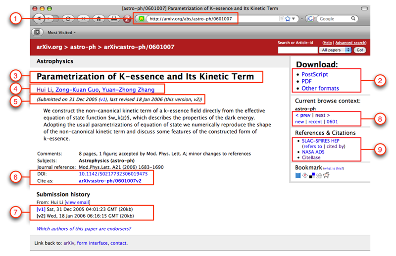
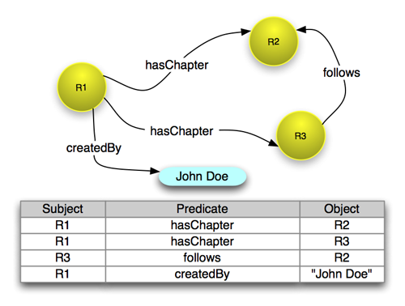
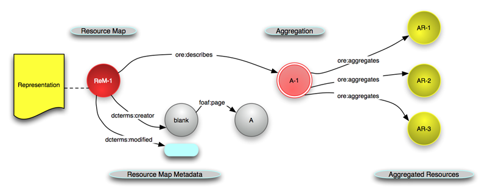
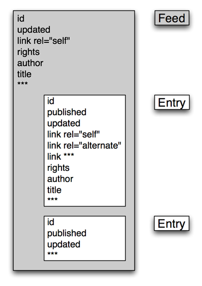

|
Open Archives Initiative Object Reuse and Exchange |
|
Open Archives Initiative Object Reuse and Exchange |
Open Archives Initiative Object Reuse and Exchange (OAI-ORE) defines standards for the description and exchange of aggregations of Web resources. This document summarizes the motivation for OAI-ORE, the technical foundations on which the OAI-ORE solution to handle aggregations of Web resources builds, as well as the core aspects of that solution.This document is intended for a general audience that wants to obtain a high-level understanding of the OAI-ORE solution. Detailed information for more technically advanced readers and implementers is available in the OAI-ORE specifications and user guides.
1. Why use OAI-ORE?
2. Motivating Example
3. Foundations of ORE
3.1 Architecture of the World Wide Web
3.2 Semantic Web, Linked Data, Cool URIs for the Semantic Web
3.3 Resource Description Framework
4. ORE in a Nutshell
5. Resource Map Serialization
5.1 Resource Map in RDF/XML
5.2 Resource Map in Atom
6. Resource Maps and Aggregations on the Web
6.1 HTTP 303
6.2 Hash URIs
7. What should you read now?
8. References
A. Acknowledgements
B. Change Log
In the physical world we create, use, and refer to aggregations of things all the time. We collect pictures in a photo album, read journals that are collections of articles, and burn CDs of our favorite songs. In this physical world these aggregations are frequently tangible - we can hold the photo album, journal, and CD. But, we also aggregate abstract entities - for example classification schemes aggregate abstract subjects into broader abstract groups.
This practice of aggregating extends to the Web. We accumulate URL's in bookmarks or favorites lists in our browser, collect photos into sets in popular sites like Flickr, browse over multiple page documents that are linked together through "prev" and "next" tags, and talk about Web sites as if they had some real existence beyond the set of pages of which they consist. Despite our frequent use of these aggregations, their existence on the Web is quite ephemeral. One reason for this is that there is no standard way to identify an aggregation. We often use the URI of one page of an aggregation to identify the whole aggregation. For example, we use the URI of the first page of a multi-page Web document to identify the whole document, or we use the URI of the HTML page that provides access to a Flickr set to identify the entire set of images. But those URIs really just identify those specific pages, and not the union of pages that makes up the whole document, or the union of all images in a Flickr set, respectively. In essence, the problem is that there is no standard way to describe the constituents or boundary of an aggregation, and this is what OAI-ORE aims to provide.
Because aggregations are not well-defined on the Web, we are limitited in what we can do with them, especially in terms of the services or automated processes that make the Web useful. People who wish to save or print a multiple page document must manually click through each page and invoke the appropriate browser command. Programs that transfer multiple page documents among information systems must rely on the API's of the individual system architectures and their definition of document boundaries. Search engines must use heuristics to group individual Web pages into logical documents so that search results have the proper granularity.
This primer describes the essence of the solution that OAI-ORE provides to deal with aggregations of Web resources; it is intended for a general audience that wants to obtain a high-level understanding of the OAI-ORE solution. The primer also provides pointers to OAI-ORE specifications and implementation guidelines, which provide detailed information for implementers. This primer is structured as follows:
The aggregation problem that ORE addresses can be explained by means of a document in the arXiv, a well-known repository of physics, mathematics, and computer science research results. The human start page for this document is shown in Figure 1. Some aspects of the page relevant to the ORE aggregation problem are highlighted in red rectangles, each with a number. The meanings of the highlighted areas are as follows:
http://arxiv.org/abs/astro-ph/0601007 of the human start page. Figure 1: Human start page for an arXiv document

This rather simple example highlights the core issues that ORE addresses:
ORE solves the aforementioned problems by introducing a URI for the aggregation that denotes the entire arXiv document, and by publishing a machine-readable document that describes that aggregation. For example, the document describes which resources are part of the aggregation, and which are merely related to it. This section briefly introduces the foundations upon which the ORE solution to the aggregation problem is built.
The foundations of the Web as we know it are detailed in the Architecture of the World Wide Web [Web Architecture]. This architecture defines the following core notions:
On the Web that we use on a daily basis, URIs are used primarily to identify Web documents. They are identifiers that, when dereferenced, return a human-readable Representation. However, on the Semantic Web, URIs are introduced to identify so-called real world entities, such as people or cars, or even abstract entities, such ideas or classes. Since these things are not documents, they have no Representation to indicate what these Resources mean. The Linked Data Effort [Linked Data Tutorial] describes an approach for obtaining information about those Resources despite the fact that they have no Representation. To summarize, the approach consists of:
The documents that are proposed by the Linked Data effort to describe these abstract Resources are typically expressed in RDF/XML, which is an XML-based serialization for the Resource Description Framework (RDF) [RDF Concepts] that forms the foundational data model of the Semantic Web. This model consists of subject-predicate-object statements called triples. Triples express relationships pertaining to a subject Resource denoted by a URI. The predicate Resource, also denoted by a URI, indicates the nature of the relationship . The object expresses the actual value for the relationship expressed by the predicate; the object can be denoted by a URI or can be a literal value, such as a string or a number. When multiple triples are expressed, or asserted, they may share subjects and objects and, as a result they conceptually join together in what is called a graph in mathematical terms. This graph consists of nodes that are the Resources denoted by the subject and object URIs, and edges that are the relationship predicates.
An example is shown in Figure 2. The figure shows four RDF triples, which are then depicted in the graph in which Resources are yellow circles that list their URIs. Note that because R1 is the subject of two triples, it has two outgoing edges in the graph. Similarly since R2 is the object of two triples, it has two incoming edges. The illustration also shows a triple that has a literal string (e.g. "John Doe") as its object.
Figure 2: Four RDF triples and their graph representation

ORE leverages the foundations described above to arrive at a solution to handle aggregations of Web resources. The essence of the ORE solution can be summarized as follows (Figure 3):
ore:describes relationship in Figure 3), and it lists the resources that are part of the Aggregation (the ore:aggregates relationship in Figure 3). But, a Resource Map can also express relationships and properties pertaining to all these Resources, as well as metadata pertaining to the Resource Map itself, e.g. who published it and when it was most recently modified (the dcterms:creator and dcterms:modified relationships in Figure 3). Resource Maps can be expressed in different formats including Atom XML, RDF/XML, RDFa, n3, turtle, and other RDF serialization formats. Serialization examples are shown in the Resource Map Serialization section, and described in detail in the implementation guidelines that show how to express Resource Maps in Atom XML and in RDF/XML and RDFa. Figure 3: The Aggregation A-1 aggregates three Resources and is described by Resource Map ReM-1

ORE supports Resource Map serializations in RDF/XML, RDFa, and Atom
XML. Below, examples are shown of RDF/XML and Atom XML Resource Maps
that convey some essential information pertaining to the example
arXiv document. Note that the URI
http://arxiv.org/aggregation/astro-ph/0601007 was
introduced as the HTTP URI to identify the Aggregation that denotes
the arXiv document.
Figure 3 shows some of the core
relationships introduced by the ORE Data Model that is entirely based
on RDF. Because of that, a Resource Map that describes an Aggregation
can readily be expressed in RDF/XML and other RDF serialization
formats such as n3 and turtle. Table 1 shows a
simple RDF/XML Resource Map that describes the arXiv Aggregation
http://arxiv.org/aggregation/astro-ph/0601007. The
comments in the RDF/XML document explain how the various RDF
statements relate to the ORE concepts introduced in the section ORE in a Nutshell.
Table 1: A simple Resource Map for the arXiv Aggregation serialized in RDF/XML
<?xml version="1.0" encoding="utf-8"?>
<rdf:RDF xmlns:rdf="http://www.w3.org/1999/02/22-rdf-syntax-ns#"
xmlns:ore="http://www.openarchives.org/ore/terms/"
xmlns:dcterms="http://purl.org/dc/terms/"
xmlns:dc="http://purl.org/dc/elements/1.1/"
xmlns:foaf="http://xmlns.com/foaf/0.1/" >
<!-- About the Aggregation for the ArXiv document -->
<rdf:Description rdf:about="http://arxiv.org/aggregation/astro-ph/0601007">
<!-- The Resource is an ORE Aggregation -->
<rdf:type rdf:resource="http://www.openarchives.org/ore/terms/Aggregation"/>
<!-- The Aggregation aggregates ... -->
<ore:aggregates rdf:resource="http://arxiv.org/abs/astro-ph/0601007"/>
<ore:aggregates rdf:resource="http://arxiv.org/ps/astro-ph/0601007"/>
<ore:aggregates rdf:resource="http://arxiv.org/pdf/astro-ph/0601007"/>
<!-- Metadata about the Aggregation: title and authors -->
<dc:title>Parametrization of K-essence and Its Kinetic Term</dc:title>
<dcterms:creator rdf:parseType="Resource">
<foaf:name>Hui Li</foaf:name>
<foaf:mbox rdf:resource="mailto:lihui@somewhere.cn"/>
</dcterms:creator>
<dcterms:creator rdf:parseType="Resource">
<foaf:name>Zong-Kuan Guo</foaf:name>
</dcterms:creator>
<dcterms:creator rdf:parseType="Resource">
<foaf:name>Yuan-Zhong Zhang</foaf:name>
</dcterms:creator>
</rdf:Description>
<!-- About the Resource Map (this RDF/XML document) that describes the Aggregation -->
<rdf:Description rdf:about="http://arxiv.org/rem/atom/astro-ph/0601007">
<!-- The Resource is an ORE Resource Map -->
<rdf:type rdf:resource="http://www.openarchives.org/ore/terms/ResourceMap"/>
<!-- The Resource Map describes a specific Aggregation -->
<ore:describes rdf:resource="http://arxiv.org/aggregation/astro-ph/0601007"/>
<!-- Metadata about the Resource Map: datetimes, rights, and author -->
<dcterms:modified>2008-10-03T07:30:34Z</dcterms:modified>
<dcterms:created>2008-10-01T18:30:02Z</dcterms:created>
<dc:rights>This Resource Map is available under the Creative Commons Attribution-Noncommercial Generic license</dc:rights>
<dcterms:rights rdf:resource="http://creativecommons.org/licenses/by-nc/2.5/rdf"/>
<dcterms:creator rdf:parseType="Resource">
<foaf:page rdf:resource="http://arxiv.org"/>
<foaf:name>arXiv.org e-Print Repository</foaf:name>
</dcterms:creator>
</rdf:Description>
<!-- About the human start page that is part of the Aggregation -->
<rdf:Description rdf:about="http://arxiv.org/abs/astro-ph/0601007">
<dc:format>text/html</dc:format>
<dc:title>[astro-ph/0601007] Parametrization of K-essence and Its Kinetic Term</dc:title>
<rdf:type>info:eu-repo/semantics/humanStartPage</rdf:type>
</rdf:Description>
<!-- About the PostScript resource that is part of the Aggregation -->
<rdf:Description rdf:about="http://arxiv.org/ps/astro-ph/0601007">
<dc:format>application/postscript</dc:format>
<dc:language>en</dc:language>
<dc:title>Parametrization of K-essence and Its Kinetic Term</dc:title>
</rdf:Description>
<!-- About the PDF resource that is part of the Aggregation -->
<rdf:Description rdf:about="http://arxiv.org/pdf/astro-ph/0601007">
<dc:format>application/pdf</dc:format>
<dc:language>en</dc:language>
<dc:title>Parametrization of K-essence and Its Kinetic Term</dc:title>
</rdf:Description>
</rdf:RDF>
Atom is an XML-based format that was originally designed as a mechanism for syndicating feeds from news sources, blogs, and other dynamic Web sites. In that manner it is like the many versions of RSS. The design of Atom is more recent and includes modern XML features such as namespaces and, as a result has a flexible extensibility mechanism allowing elements and relationships from other namespaces. Because of this, in recent years the use of Atom has been extended to many purposes such as packaging descriptions of a variety of Web Resources.
This is not a primer for Atom and the interested reader is referred to RFC-4287 that fully describes Atom. The reader of this primer only needs to be aware of the basic entities in Atom, as shown in the Figure 4, including:
Figure 4: An Atom Feed with two Atom Entries

An Atom document may either be one feed with multiple
entries as shown in Figure 4, or may just be a
single entry that is not contained within a feed. ORE leverages the latter, expressing a Resource Map as
an Atom entry. Table 2 shows an Atom entry that
describes the arXiv Aggregation
http://arxiv.org/aggregation/astro-ph/0601007. The
comments in the Atom XML document explain how the various Atom
elements relate to the ORE concepts introduced in the section ORE in a Nutshell.
Table 2: A simple Resource Map for the arXiv Aggregation serialized in Atom XML
<?xml version="1.0" encoding="UTF-8"?>
<atom:entry
xmlns:dcterms="http://purl.org/dc/terms/"
xmlns:atom="http://www.w3.org/2005/Atom"
xmlns:ore="http://www.openarchives.org/ore/terms/"
xmlns:foaf="http://xmlns.com/foaf/0.1/">
<atom:id>tag:arxiv.org,2008:astro-ph:0601007</atom:id>
<!-- About the Aggregation for the ArXiv document -->
<!-- This Atom entry describes a specific ORE Aggregation -->
<atom:link href="http://arxiv.org/aggregation/astro-ph/0601007"
rel="http://www.openarchives.org/ore/terms/describes"/>
<atom:category term="http://www.openarchives.org/ore/terms/Aggregation"
scheme="http://www.openarchives.org/ore/terms/" label="Aggregation"/>
<!-- The Aggregation aggregates ... -->
<atom:link href="http://arxiv.org/abs/astro-ph/0601007"
rel="http://www.openarchives.org/ore/terms/aggregates"
title="[astro-ph/0601007] Parametrization of K-essence and Its Kinetic Term"
type="text/html" />
<atom:link href="http://arxiv.org/ps/astro-ph/0601007"
rel="http://www.openarchives.org/ore/terms/aggregates"
title="Parametrization of K-essence and Its Kinetic Term" type="application/postscript"
hreflang="en"/>
<atom:link href="http://arxiv.org/pdf/astro-ph/0601007"
rel="http://www.openarchives.org/ore/terms/aggregates"
title="Parametrization of K-essence and Its Kinetic Term" type="application/pdf"
hreflang="en"/>
<!-- Metadata about the Aggregation: title and authors -->
<atom:title>Parametrization of K-essence and Its Kinetic Term</atom:title>
<atom:author>
<atom:name>Hui Li</atom:name>
<atom:email>lihui@somewhere.cn</atom:email>
</atom:author>
<atom:author>
<atom:name>Zong-Kuan Guo</atom:name>
</atom:author>
<atom:author>
<atom:name>Yuan-Zhong Zhang</atom:name>
</atom:author>
<!-- About the Resource Map (this Atom XML entry document) that describes the Aggregation -->
<!-- The HTTP URI of this Resouce Map -->
<atom:link href="http://arxiv.org/rem/atom/astro-ph/0601007"
rel="self"
type="application/atom+xml"/>
<!-- Metadata about the Resource Map: datetimes, rights, and author -->
<atom:updated>2008-10-03T07:30:34Z</atom:updated>
<atom:published>2008-10-01T18:30:02Z</atom:published>
<atom:rights>This Resource Map is available under the Creative Commons Attribution-Noncommercial Generic license</atom:rights>
<atom:link href="http://creativecommons.org/licenses/by-nc/2.5/rdf"
rel="license"
type="application/rdf+xml"/>
<atom:source>
<atom:author>
<atom:name>arXiv.org e-Print Repository</atom:name>
<atom:uri>http://arxiv.org</atom:uri>
</atom:author>
</atom:source>
<!-- About the human start page that is part of the Aggregation -->
<atom:link href="http://arxiv.org/abs/astro-ph/0601007" rel="alternate"/>
</atom:entry>
When a Resource Map is published on the Web, its URI can be dereferenced by an HTTP protocol request that returns an RDF/XML or Atom XML document as shown in the section Resource Map Serializations. Clients and agents can then interpret that document and provide enhanced services based on the included information. These include navigation, printing, archiving, visualizing, and transforming the Aggregation.
The reverse functionality is also important. Clients that get access to the HTTP URI of an Aggregation, via a citation or another form of linking, should be able to discover that the Resource identified by that HTTP URI is indeed an Aggregation, and to subsequently access a Resource Map that describes the Aggregation.
As noted, however, an Aggregation is a one of those special Semantic Web resources: dereferencing its URI via an HTTP protocol request does not yield a Representation. This section briefly describes two methods that ORE recommends for gaining access to a Resource Map that describes an Aggregation, given the HTTP URI of that Aggregation. These two methods are based on guidelines from the Semantic Web community that are fully articulated in the Cool URIs for the Semantic Web specification [CoolURIs].
This method is appropriate in applications where the party that introduces an Aggregation and a Resource Map that describes it has control over a Web server. It also the recommended approach when Resource Maps in multiple formats, such as both Atom XML and RDF/XML, are published to describe the same Aggregation.
The mechanics of this method are as follows. When the server receives an HTTP request for the Aggregation URI A-1 it returns an HTTP 303 status code (which means "see also") with a redirection to the Resource Map URI ReM-1. The browser or agent may then make a new HTTP request for ReM-1. Requests for URI A-1 can also employ 303 redirection with content negotiation [RFC2616 , CoolURIs] to include redirection to a Resource Map in one of several formats.
Example URIs are:
Aggregation: A-1 = http://example.org/foo Resource Map: ReM-1 = http://example.org/foo.rdf
and additional serializations may be added following the URI pattern:
ReM-2 = http://example.org/foo.atom
This method does not require that the party that introduces an
Aggregation and a Resource Map controls a Web server. The URI of the
Aggregation A-1 is constructed by appending a fragment
identifier #aggregation to the Resource Map URI
ReM-1. Example URIs are:
Aggregation: A-1 = http://example.org/foo.rdf#aggregation Resource Map: ReM-1 = http://example.org/foo.rdf
As defined by HTTP [RFC2616], an agent
should strip off the fragment identifier before issuing an HTTP
request to the server. The result is that the server request is
actually to ReM-1. But, by introducing the
frament identifier, the URIs A-1 and ReM-1
still identify different Resources as defined by the
Architecture of the World Wide Web [Web
Architecture].
This primer has briefly introduced concepts and approaches used in the OAI-ORE specifications. Interested readers, especially those intending to implement these specifications, should obtain further details in the following documents.
This document is the work of the Open Archives Initiative. Funding for Open Archives Initiative Object Reuse and Exchange is provided by the Andrew W. Mellon Foundation, Microsoft, and the National Science Foundation. Additional support is provided by the Coalition for Networked Information.
This document is based on meetings of the OAI-ORE Technical Committee (ORE-TC), with participation from the OAI-ORE Liaison Group (ORE-LG). Members of the ORE-TC are: Chris Bizer (Freie Universität Berlin), Les Carr (University of Southampton), Tim DiLauro (Johns Hopkins University), Leigh Dodds (Ingenta), David Fulker (UCAR), Tony Hammond (Nature Publishing Group), Pete Johnston (Eduserv Foundation), Richard Jones (Imperial College), Peter Murray (OhioLINK), Michael Nelson (Old Dominion University), Ray Plante (NCSA and National Virtual Observatory), Rob Sanderson (University of Liverpool), Simeon Warner (Cornell University), and Jeff Young (OCLC). Members of ORE-LG are: Leonardo Candela (DRIVER), Tim Cole (DLF Aquifer and UIUC Library), Julie Allinson (JISC), Jane Hunter (DEST), Savas Parastatidis (Microsoft), Sandy Payette (Fedora Commons), Thomas Place (DARE and University of Tilburg), Andy Powell (DCMI), and Robert Tansley (Google, Inc. and DSpace)
We also acknowledge comments from the OAI-ORE Advisory Committee (ORE-AC).
| Date | Editor | Description |
|---|---|---|
| 2008-10-17 | carl/herbert | public 1.0 release (complete rewrite) |
| 2008-06-02 | simeon | public beta 0.9 release |
| 2008-04-03 | simeon | public alpha 0.3 release |
| 2008-03-02 | simeon | public alpha 0.2 release |
| 2007-12-10 | simeon | public alpha 0.1 release |
| 2007-10-15 | simeon | alpha release to ORE-TC |

This work is licensed under a Creative Commons Attribution-Share Alike 3.0 Unported License.
Use of this page is tracked to collect anonymous traffic data. See OAI privacy policy.